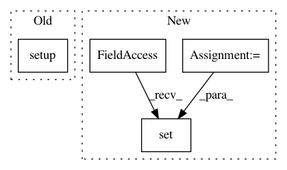

d4174f5e4263e3360d98cdac0beadd02ccfb5f5d,tests/components/test_device_sun_light_trigger.py,TestDeviceSunLightTrigger,test_lights_turn_off_when_everyone_leaves,#TestDeviceSunLightTrigger#,89
Before Change
self.hass.pool.block_till_done()
device_sun_light_trigger.setup(
self.hass, {device_sun_light_trigger.DOMAIN: {}})
self.scanner.leave_home("DEV1")
trigger_device_tracker_scan(self.hass)
After Change
self.assertTrue(device_sun_light_trigger.setup(
self.hass, {device_sun_light_trigger.DOMAIN: {}}))
self.hass.states.set(device_tracker.ENTITY_ID_ALL_DEVICES,
STATE_NOT_HOME)
self.hass.pool.block_till_done()
self.assertFalse(light.is_on(self.hass))
In pattern: SUPERPATTERN
Frequency: 3
Non-data size: 4
Instances
Project Name: home-assistant/home-assistant
Commit Name: d4174f5e4263e3360d98cdac0beadd02ccfb5f5d
Time: 2015-09-12
Author: paulus@paulusschoutsen.nl
File Name: tests/components/test_device_sun_light_trigger.py
Class Name: TestDeviceSunLightTrigger
Method Name: test_lights_turn_off_when_everyone_leaves
Project Name: home-assistant/home-assistant
Commit Name: 58afbecd0545d88f505d33c7470a87af7a8148fc
Time: 2015-09-01
Author: paulus@paulusschoutsen.nl
File Name: tests/components/test_conversation.py
Class Name: TestConversation
Method Name: setUp
Project Name: home-assistant/home-assistant
Commit Name: d4174f5e4263e3360d98cdac0beadd02ccfb5f5d
Time: 2015-09-12
Author: paulus@paulusschoutsen.nl
File Name: tests/components/test_device_sun_light_trigger.py
Class Name: TestDeviceSunLightTrigger
Method Name: test_lights_turn_on_when_coming_home_after_sun_set